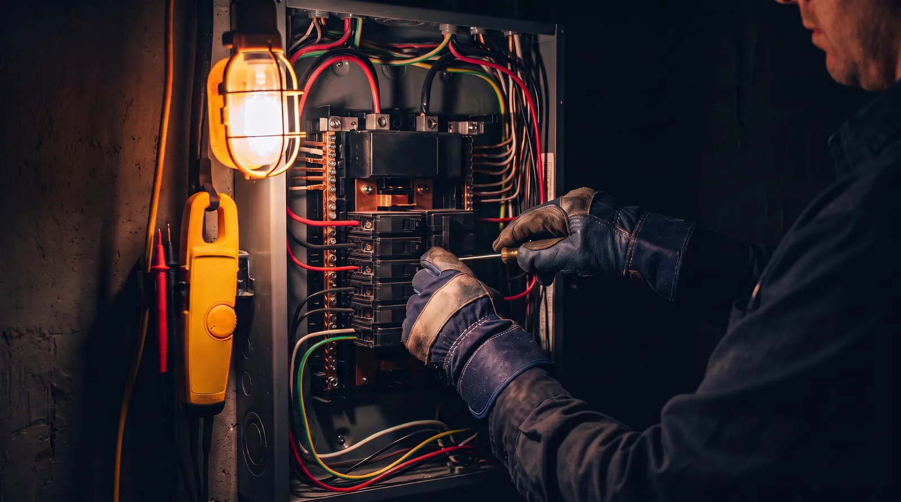

Nos circuits
Des plombs qui sautent au chantier complet.
Petites pannes ou gros projets : chaque intervention est faite dans les règles de l'art, expliquée simplement, et laissée propre derrière nous.
-
7j/7
Dépannage & urgences
Panne totale, prise qui chauffe, disjoncteur capricieux : on localise la cause et on répare — pas de rafistolage.
-
Devis gratuit
Rénovation & mise en sécurité
Tableaux vétustes, installations anciennes : on remet votre électricité en état, pièce par pièce ou d'un seul tenant.
-
Sur mesure
Éclairage & ambiances
Plans lumière, variateurs, extérieurs : la bonne lumière au bon endroit, dessinée avec vous.
-
Connecté
Domotique & confort
Volets, chauffage, interphone : des commandes simples, pensées pour durer plus longtemps que les modes.
Schéma d'intervention
Une intervention, quatre temps.
Du premier appel à la vérification finale, le circuit est toujours le même — et il est fait pour que le courant revienne vite.
Temps 01
L'appel
Décrivez la panne ou le projet : on vous oriente tout de suite et on fixe un créneau — souvent le jour même pour un dépannage.
Temps 02
Le diagnostic
Sur place, on mesure, on teste, on trouve la cause. Pas de remplacement à l'aveugle : un devis clair avant toute chose.
Temps 03
L'intervention
Réparation ou installation dans les règles de l'art, zone de travail protégée, chantier laissé net.
Temps 04
La vérification
Tests complets avec vous, explications simples — et on reste joignables si la moindre question s'allume.
4,8/5 sur Google — 87 avis
La lumière revenue, ils en parlent le mieux.
★★★★★
« Panne générale un dimanche à 21 h. Rappel en dix minutes, dépannage dans la soirée. Le père au téléphone, le fils sur place : efficaces et rassurants. »
★★★★★
« Rénovation complète de mon T3 : tableau neuf, prises repensées, chantier propre chaque soir. Le devis annoncé est le prix payé, au centime. »
★★★★★
« Ils ont repensé tout l'éclairage de la boutique. Conseil juste, finitions impeccables — et une équipe d'une gentillesse rare. »
Atelier, horaires & secteur
On n'est jamais bien loin.
- Toulouse
- Blagnac
- Colomiers
- Balma
- Ramonville
- Tournefeuille
L'atelier
22 rue de la Dynamo
31300 Toulouse
Interventions à Toulouse et sa couronne : Blagnac, Colomiers, Balma, Ramonville, Tournefeuille…
Horaires
Lun–Ven — 8 h à 18 h 30
Samedi — 9 h à 12 h
Astreinte dépannage 7j/7
Une panne ce soir ? Le courant sera vite rétabli.
Un appel suffit : on vous dit tout de suite si ça peut attendre demain — et si ça ne peut pas, on vient.

22 rue de la Dynamo, 31300 Toulouse Lun–Sam · astreinte 7j/7 Devis gratuit